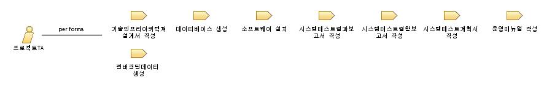

| Role: 프로젝트TA |
 |
|
Relationships
 |
||
| Additionally Performs |
|
|
|---|---|---|
| Modifies |
|
|
| Process Usage | ||
Main Description
전략적인 아키텍처를 수립하여 제안 전략 및 제안 작성의 가치와 효과를 증진하고, 전략적인 제안 작성을 수립하여 사업 참여의 기회를 최대화 하며, 최적의 기술구조 설계, 개발 표준화, 생산성 향상을 위한 표준가이드 제공, 장애대응 및 문제해결 방안제시 등 프로젝트 각 단계에서 기술 지원을 수행하는 사람 |